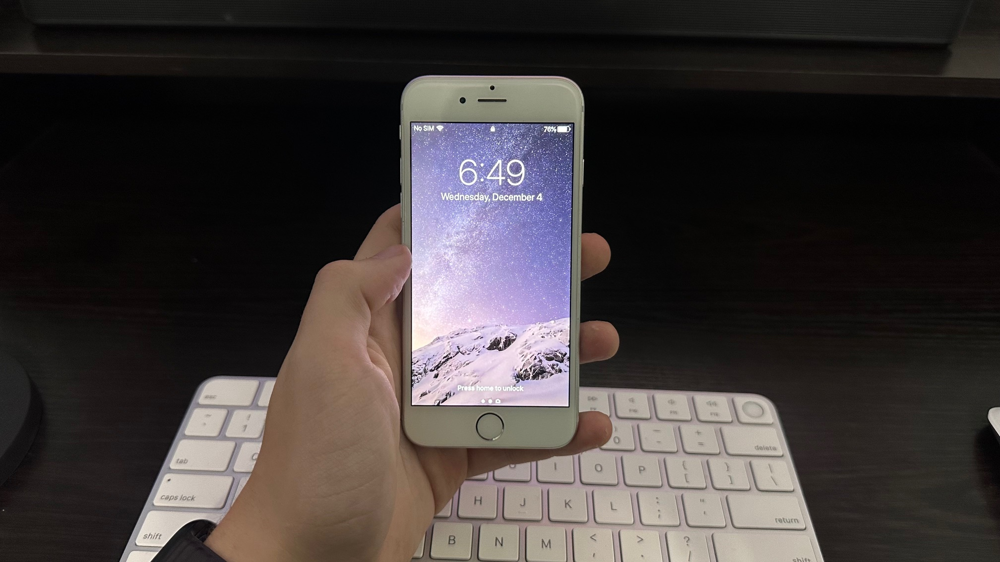
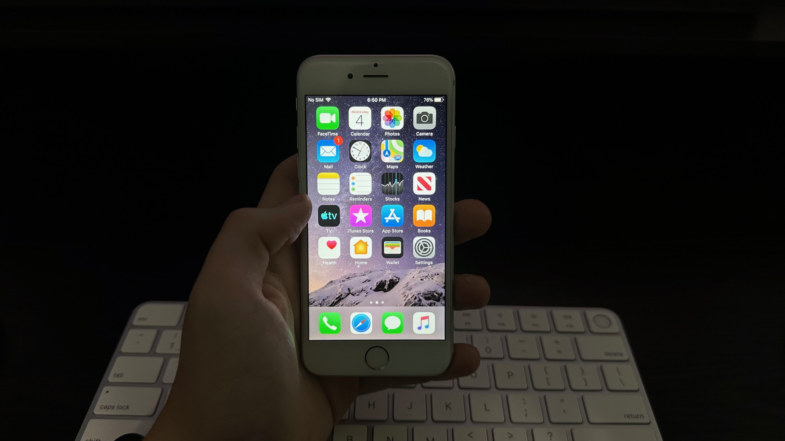
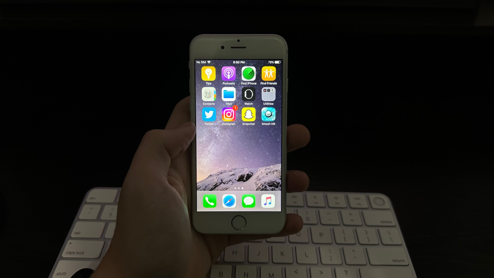
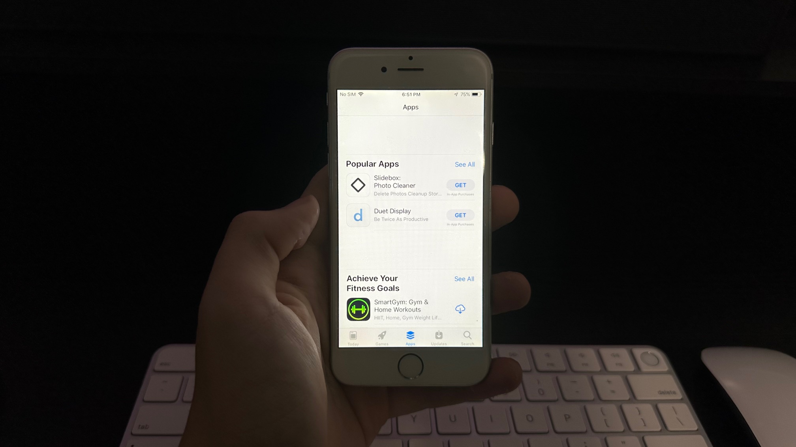
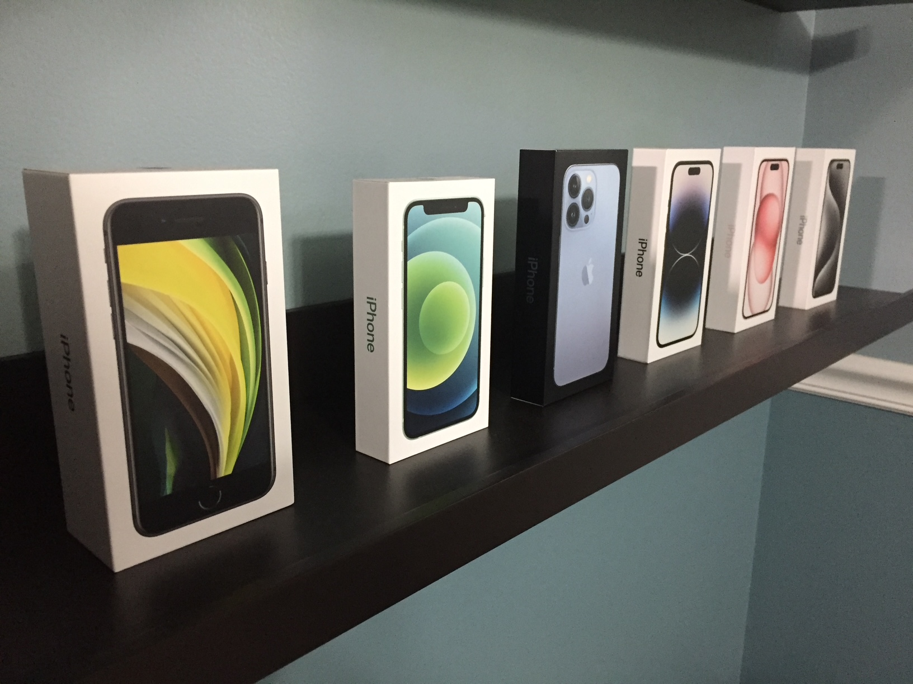

iPhone 6 Ten Years Later


After being released at the end of 2014, the iPhone 6 went on to be one of the best selling iPhones ever. As is common with the phone market, most of them have since been replaced or simply thrown out. Some, though, are still kicking around. I recently acquired an iPhone 6, and I’ve taken it as a challenge to try and see how much use I can get out of it in 2024, ten years after it came out.
To preface this, it’s not an amazing idea to use an iPhone 6 as your main phone at this point. iOS 12 is plenty old, and even though there are semi-recent security updates, the current one is from January 2023 and isn’t exactly secure anymore. It’s not a good idea to put banking or sensitive info on it. That reason alone stopped it from being my main phone, but on top of that I couldn’t even put my SIM in it. I only have the eSim from my 14 Pro, and the iPhone 6 doesn’t support eSim. But I was able to connect it to WiFi and make FaceTime Audio calls, so close enough.
For starters, mine is nowhere near perfect condition. It’s got plenty of scratches, a pretty degraded battery, and a charging port that barely works. It also sometimes thinks it has headphones in even when it doesn’t, for some reason. Not sure why it does that. Nothing that stops it from being usable, but minor annoyances.

Going back to the iPhone 6 from my iPhone 14 Pro is really interesting. The iPhone 6 feels so much nicer to hold than the 14 Pro. The compact, curved aluminum build just sits in the hand better than the heavy and sharp stainless steel and glass of the 14 Pro. Back in 2014 people thought it was a big phone, but today it’s downright small.
And I think that’s a good thing. Having a screen you can easily use with one hand is amazing. During the few weeks I used the iPhone 6 as a secondary phone, the size was the thing I appreciated the most about it. I had a 2020 iPhone SE for a few years, and going to the 14 Pro the size felt like a step backwards.
App support on the iPhone 6 today honestly isn’t too bad. Basically all major apps on the App Store aren’t available for download anymore, but as long as you downloaded them on another device you can redownload the latest supported version of the app. Having only 16 GB of storage I could only install a few apps, but the ones I installed work perfectly well.
Instagram, Snapchat, and Discord basically work perfectly. Apart from being slow, there’s nothing in those apps that doesn’t work. They’re all perfectly usable. Twitter (which is still actually Twitter on iOS 12) has most of its functionality intact, but support goes in and out. For a while it wouldn’t let you post anything, but now you can. But you can’t like any posts now, so make of that what you will. Reddit seems to mostly work, but signing in is bugged and needs you to use your Google account. Duolingo also works fine apart from being generally pretty buggy.

All of Apple’s stock apps work as intended except for Reminders. Apple updated the framework of the app in iOS 13, and if you used any device newer than that on your Apple ID, Reminders won’t work on older software versions. I use Reminders a lot, so that’s really frustrating to me.
Other than that, Apple Music still works, you can still FaceTime people, iMessage is fine other than lacking newer features, Photos syncs to iCloud, Mail and Calendar are just as they should, and the iWork suite also works just fine. If you’re able to stick to just Apple apps, the iPhone 6 is just fine.
Other parts of the hardware are serviceable. The screen isn’t bad, as it’s a Retina display. It’s not OLED but otherwise is fine. The battery is in decent condition at 83% health, but it still doesn’t last nearly all day. It wasn’t great when the phone was new, but considering the four major iOS updates it got and 10 years of service it’s holding up fine for its age. The camera takes pictures and videos. Not well, but it can definitely capture images.

Touch ID barely works. Not sure if it’s a skill issue, but I can’t for the life of me get it to read my fingerprint. I disabled it entirely because it just doesn’t work. I don’t recall it being that bad on my 2020 SE, so I’m not sure if the Touch ID sensor on my iPhone 6 is just worn out or something. Regardless, it’s definitely not supposed to be that bad. I also just have really sweaty hands unfortunately, so that could also be a reason it doesn’t work. Take of my Touch ID experience what you will, as it could be completely different for you.
In all, I think if you have enough patience and lack of care about premium features the iPhone 6 could be a decent phone. If you’re just trying to escape the struggles of screen time, it’s not a bad option. Unfortunately, the iPhone 6 was born of a time when iPhones significantly degraded as software support continued, something you don’t see as much anymore. Something like the iPhone 7 would be a lot better at this point. But for basic tasks, the iPhone 6 is just enough.
